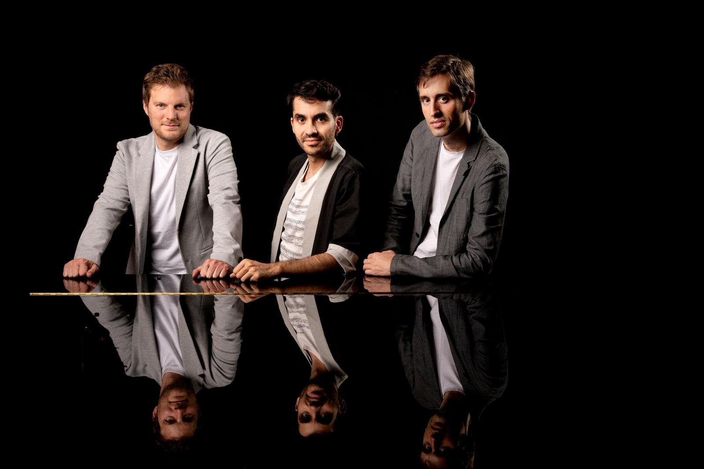

El Trío VibrArt, fundado en 2015 en Berlín, nace de tres brillantes carreras individuales que se entrelazan para dar voz al repertorio de trío con piano de una manera comprometida, honrada y auténtica. Con Juan Pérez Floristán al piano, Miguel Colom al violín y Fernando Arias al violonchelo, el grupo se forja en Berlín tras muchos años de amistad y pasión por la música, y su nombre, «VibrArt», pone de relieve la capacidad de la música de cámara para transmitir, comunicar y hacer vibrar a quien la escucha.
Los tres integrantes del trío han tenido (y siguen teniendo) vidas musicales paralelas: se formaron en la Escuela Reina Sofía y en Berlín, y actualmente compaginan su actividad camerística con sus proyectos solísticos, pedagógicos y orquestales.
Los tres músicos tienen carreras individuales muy destacadas. Juan Pérez Floristán es ganador de los concursos de Santander y Arthur Rubinstein y profesor en la Academia Barenboim-Said; Miguel Colom es concertino de la Orquesta Nacional de España y profesor en la Escuela Reina Sofía y en la Academia Barenboim-Said; y Fernando Arias es catedrático en el Conservatorio Superior de Música de Madrid, profesor en la Escuela Reina Sofía y ganador de diversos premios internacionales.
Han recibido consejos de Eberhard Feltz, Menahem Pressler y Kennedy Moretti, entre otros. A día de hoy, su repertorio abarca muchas de las grandes obras para trío con piano, desde Mozart hasta Lera Auerbach, pasando por Beethoven, Brahms, Schubert, Dvořák, Mendelssohn o Shostakóvich.
Actúan asiduamente por Europa, en escenarios y festivales como el Festival de Pollença, el Festival de Marvão (Portugal), Schloss Elmau, la Salle Cortot de París, la Fundación Juan March de Madrid o el Otoño Musical Soriano. Asimismo, se han presentado como trío solista junto a formaciones como la Orquesta Nacional de España, la Orquesta Sinfónica de Barcelona y Nacional de Catalunya, la Real Orquesta Sinfónica de Sevilla o la Orquesta de la Diputación de Alicante, en salas como el Auditorio Nacional de Música de Madrid, L’Auditori de Barcelona o el Teatro de la Maestranza de Sevilla.